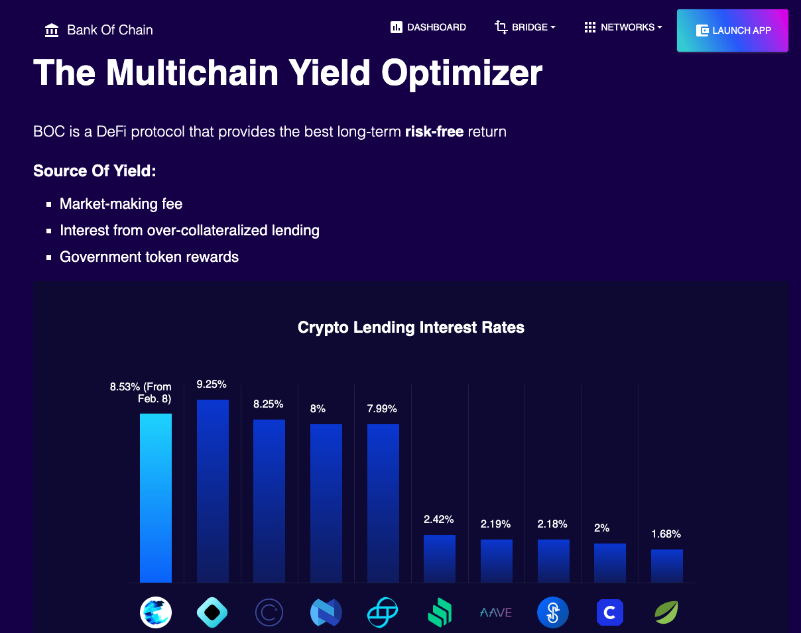

Introduction to BOC
BOC is a quick win for Liquidity Providers
The BOC Platform is connecting a wide scope of protocol within the crypto ecosystem e.g. AMM, Yield Aggregiator (See https://dashboard.bankofchain.io/#/ for details). Until now, these parties have usually operated within their own independent environments when directly or indirectly servicing their own set of customers. The algo-based ecosystem and the defi network will be the key that unlocks the ‘gates’ between the fund lender and the reasonable profits.
AMM and Yield Aggregator and operators are envisaged to grow their markets by attracting more funds from a wider demographic range. This will be done by allowing operators to engage with BOC fund lenders in algo development to help them assimilate to the content inside the protocol.
For fund lenders, there will certainly be more safe investment choices. Parked funds will be more engaging by enhancing instance buy/sell, transparency, and tools to improve their chances of earning incomes. With a secured decentralized system, fund lenders can also check their real time status within the BOC ecosystem and reach higher levels based on their level of participation and milestones reached.
For new crypto-comers, it is a channel to enter into a rewarded ecosystem for their digital asset investment. They now have a one-click platform where their asset is protected by incentive features that can bring forth a new generation of income for more actions to enjoy.
WHAT IS BOC
BOC proposes to create a leading no-risk automated protocol to reward users and stakeholders in the global crypto investment world. The introduction of a tokenized long term no-risk rewarding system through the use of the open platform will allow for new incentives and transparent verifications.

Enabled by the proven on-chain algo that allows chain interoperability and transactions, lenders will kick start their reward pattern with its first use case with the globally renowned AMM and Yield Aggrigator forecast to approach $US 200 billion in revenue by 2025. With the better security and optimization of decentralization, BOC can have a 300-500bp higher benchmark compared with US dollar wealth management, and a foundation to absorb hundreds of millions of dollars.
BOC Source of Yield
BOC is a Defi protocol that provides the best long-term high ‘low-risk return and it’s source of Yield includes:
- Market-making fee
- Interest from over-collateralized lending
- Government token rewards
Why is BOC Different
BOC is easy to use
- Users shall deposit and withdraw directly without the complexity to implement and bear the cost of complex operations such as farming, exchange, and reallocation.
- Profits are automatically reinvested with an immediate deposit and withdrawal process.
- Historical and dynamic returns are intuitively visible.
The investment on BOC is safe:
- The market cap of qualified stablecoins exceeds 1 billion dollars.
- The TVL of qualified Blockchains exceeds 5 billion dollars.
- BOS has third party auditing in place.
- BOC does not use unofficial third party cross-chain bridges for transactions.
- BOC price quotation relies on Chainlink, a market leading oracle.
BOC has a reliable risk control procedure:
- Minimizing de-anchoring risk of stablecoins: No algorithmic stablecoin, No partially collateralized stablecoin, No stablecoin collateralized by long-tail assets.
- Minimizing the risk of impermanent loss: market-making for stablecoin pairs only.
- Minimizing the systemic risk: Very selective wrapped tokens and yield aggregators.
- Minimizing the long-tail risk: no yield are generated from risk servicing business, such as insurance underwriting, sell call options
- No risk in leveraging: no leverage function is provided.
BOC is a smart-based product:
- BOC regularly calibrates the yield, weighing the cost and reward for funds reallocation.
- BOC searches for the best rate through exchange aggregators.
- BOC performs FX interest swap, adjusting FX synthesis based on exchange rate and yield.
- BOC automatically sets parameters for market-making and lending strategy.
In summary, the investment model of the BOC Platform is the missing catalyst that will revolutionize the industry and generate new market growth.
| Comparing Product | BOC | Yearn | OUSD | Aladdin DAO | enzyme | farming | beefy | alpha | yield app |
| Type | DeFi Bank | Yield Aggregator | Stablecoin | Yield Aggregator | On-chain asset management | Yield Aggregator | Yield Aggregator | Yield Aggregator | DeFi Bank |
| Details | BOC is a DeFi protocol that provides the best long-term risk-free return | Yearn Finance is a suite of products in Decentralized Finance (DeFi) that provides yield generation, lending aggregation, and more on the blockchain. The protocol is maintained by various independent developers and is governed by YFI holders. | Origin Dollar (OUSD) is a new stablecoin that was initially launched on the Ethereum network. Its design is superior to existing stablecoins because OUSD captures competitive yields while being passively held in wallets. | AladdinDAO is a decentralized network to shift crypto investments from venture capitalists to wisdom of crowds through collective value discovery. At AladdinDAO, a group of world class experts in DeFi known as the AladdinDAO Boule identifies the most promising DeFi projects and enables AladdinDAO community members to enjoy the returns of their liquidity mining programs. As a result, the protocol will help to reduce information asymmetry and optimize asset allocations for the DeFi space overall. | Fast & cost-effective way to build, scale and monetize investment strategies.Fast & cost-effective way to build, scale and monetize investment strategies. | Harvest Finance is a yield farming protocol that lets users put their assets to work in high-producing farming opportunities. | Beefy Finance is a Decentralized, Multi-Chain Yield Optimizer that allows its users to earn compound interest on their crypto holdings. Beefy earns you the highest APYs with safety and efficiency in mind. | Alpha Finance Lab is an ecosystem of cross-chain DeFi products that focus on capturing unaddressed demand in an innovative and user friendly way. Alpha Homora, the first product, is a leveraged yield farming and leveraged liquidity providing protocol where ETH lenders can earn high lending interest rate and leveraged yield farmers/liquidity providers can increase the APY. | Your Digital Wealth Partner Discover the easiest way to earn on your digital assets |
| Supported Chain | ETH BSC Polygon |
ETH Fantom |
ETH | ETH | ETH | ETH BSC Polygon |
BSC、Polygon、Arbitrum、Fantom、Avalanche、Harmony, etc... | ETH BSC Avalanche |
ETH V2 支持BSC |
| Locked Asset（USD） 2022/3/8 |
31k | 3.05B | 155.82m | 2.78m | 167.98m | 222.25m | 921.5m | 827.8m | 512.71m |
| Official Token | n/a | YFI | OGN | ALD | MLN | FARM | BIFI | ALPHA | YLD |
| KYC Required | N | N | N | N | N | N | N | N | Y |
| Open Source | Y | Y | Y | Y | Y | Y | Y | Y | N |
| Min. Investment | N | N | N | N | N | N | N | N | 100 USD |
| Stablecoin only | Y | N | Y | N | N | N | N | N | N |
| "Stablecoin actual return (without considering token incentives and subsidies) Note: The rate of return of the corresponding competing product needs to be confirmed twice, and currently it only reflects the official display rate of the product" |
5.46% | 8.97% | 3.63% | - | 5.42% | 4.41% | 1.20% | 7-11% | |
| Pool QTY | 1 | Multi | 1 | Multi | Multi | Multi | Multi | Multi | Multi |
| Pool Support Multi-Strategy | Y | Y | Y | N | Y | Y | N | N | unknown |
| Support automatic fund allocation | Y | No, a quota needs to be set | N | N | No, a quota needs to be set by fund manager | No, a quota needs to be set | N | N | unknown |
| Exchange will occur in pool investment | Y | N | N | N | Y | N | N | N | unknown |
| strategy selection | For the time being, it is strictly selected by the project party | Community | selected by the project party | Community | selected by the fund manager | Community | Community | Community | selected by the project party |
| Consider the spread of funds | Y | N | N | N | N | N | N | N | unknown |
| Redeem using aggregates | Y | N | N | N | Y | N | N | N | unknown |
| Support leveraged lending and investment | nil | nil. Removed | N | N | N | N | N | Y | N |
| Support to extract at any time | Y | Y | Y | Y | Y | Y | Y | Y | Y |
| fee collection | Commission | Commission / Management fee | Commission / Withdrawal Fee | Commission | Commission / Entrance Fee / Management Fee | Commission | Commission / Management Fee | Commission | Commission |